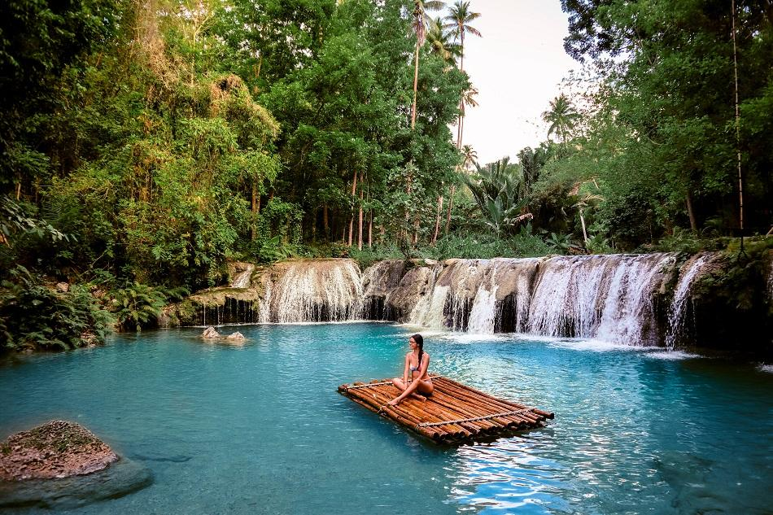
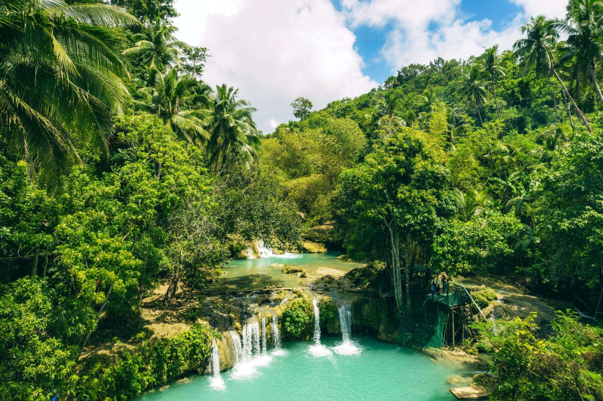
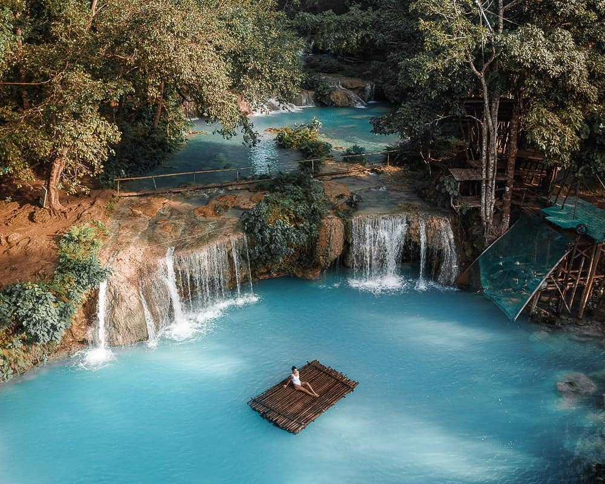
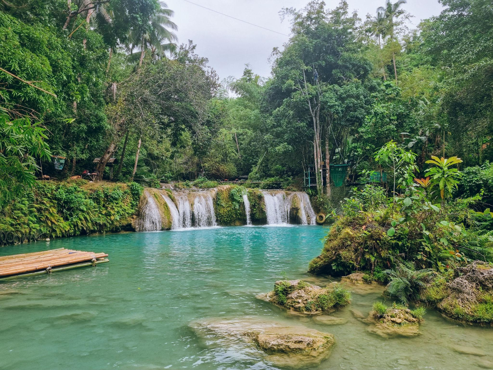
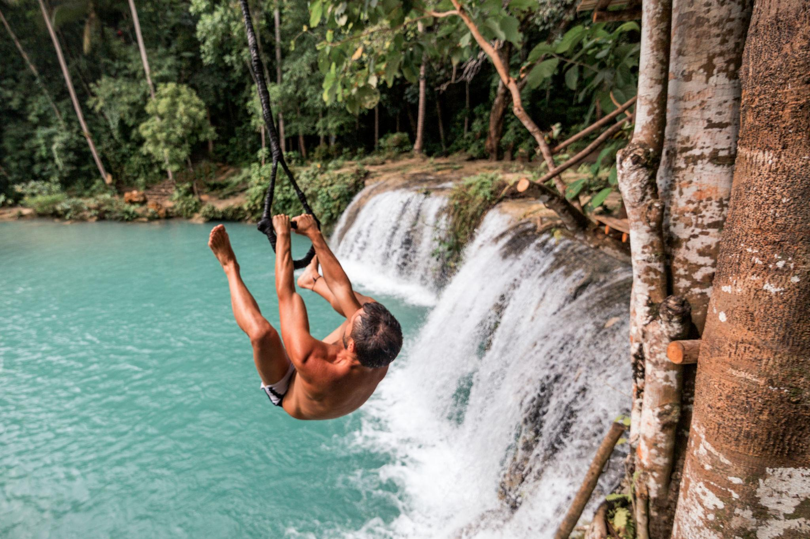
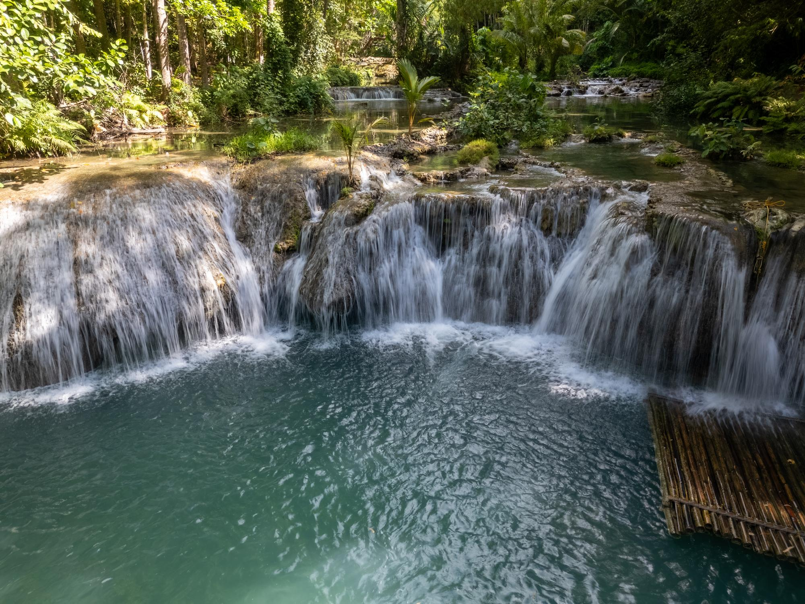
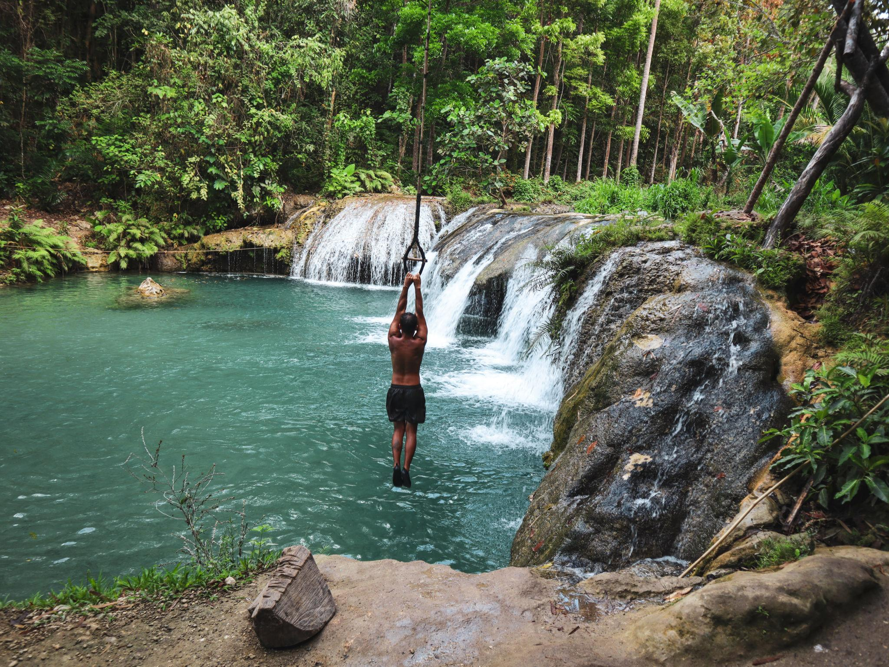
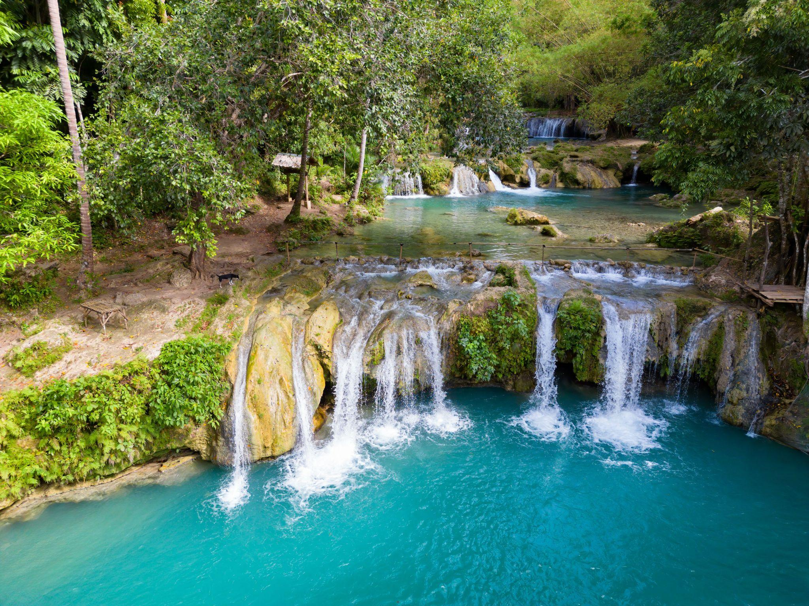

About Us
Cambugahay Falls is one of Siquijor Island's most breathtaking and beloved natural wonders — a series of three tiered waterfalls fed by cool, crystal-clear freshwater springs that cascade into vibrant turquoise pools, all nestled within a lush, shaded tropical forest. Unlike many waterfalls in the Philippines, Cambugahay invites you to swim freely in each of its three pools, making it as refreshing as it is beautiful.
The falls are located in the municipality of Lazi in the southern part of Siquijor Island. The word "Cambugahay" is derived from a local Visayan term, and the site has long been considered sacred and mystical by the islanders — perfectly fitting for an island famously known as the "Island of Fire" and associated with folk healing and enchantment. The energy of the place is palpable: the sound of rushing water, the cool mist in the air, and the towering trees overhead create a sanctuary unlike anywhere else in the Philippines.
What sets Cambugahay apart from other waterfalls is its accessibility and the variety of activities it offers for visitors of all ages. From families wading in the shallow lower pool, to adventurers swinging on rope swings over the deeper upper tiers, to couples drifting peacefully on bamboo rafts — there is something here for everyone. The water remains refreshingly cool throughout the year, fed entirely by natural underground springs rather than seasonal rainfall, which means Cambugahay is consistently swimmable even during dry months.
What We Offer
Plunge into the cool, crystal-clear spring-fed pools at each tier. The water is naturally refreshing and safe for all ages.
Glide across the stunning turquoise pools on a traditional bamboo raft — the iconic Cambugahay experience you can't miss.
Feel the rush as you swing from a rope and drop into the cool waters below — an adrenaline rush surrounded by paradise.
Capture stunning moments at every angle. Local guides can help you find the best spots for breathtaking shots.
Explore the lush forest trails surrounding the falls and discover the rich biodiversity of Siquijor Island.
Enjoy authentic Visayan cuisine at nearby restos and carinderias. Freshly cooked meals after a refreshing swim.
Explore & Discover
Whether you're planning your first visit or returning for another dip, here is a deeper look at what makes Cambugahay Falls one of the most remarkable natural destinations in the Visayas.
Cambugahay Falls is composed of three distinct tiers or levels, each with its own natural pool. The lowest tier is the widest and most accessible, perfect for families and casual swimmers. The middle tier features the famous rope swings and bamboo raft area, while the uppermost tier offers a more secluded and intimate experience surrounded by dense forest canopy. Each level has a unique character, and many visitors spend hours exploring all three.
Unlike most waterfalls in the Philippines that depend heavily on seasonal rainfall, Cambugahay is fed by natural underground freshwater springs. This means the water flows consistently throughout the year — even during the dry season — and maintains its characteristic cool temperature and brilliant turquoise-green color. The clarity of the water is exceptional; you can see straight to the rocky bottom even in the deepest pools, which adds to its almost surreal, magical appearance.
Siquijor is a small island province in the Central Visayas region of the Philippines, famous for its mystical reputation, white sand beaches, and pristine natural environments. For many years, superstition kept tourists away — the island was associated with folk magic and healers. Today it is celebrated as one of the Philippines' hidden gems, with Cambugahay Falls as its crown jewel. The island is easily reached by ferry from Cebu, Dumaguete, or Tagbilaran.
The rope swings at Cambugahay are one of its most iconic and thrilling features. Anchored to the trees above the middle tier, these swings allow visitors to swing out over the turquoise pool and drop into the cool water below. There are swings at different heights, catering to both the cautious and the daring. Local staff are always on hand to assist first-timers, and the atmosphere is always full of laughter, cheering, and excitement as people take the plunge.
Renting a bamboo raft at Cambugahay is considered a rite of passage for visitors. These traditional wooden rafts are hand-made by local craftsmen and are perfectly sized for one or two people to float lazily across the lower pool, directly in front of the cascading waterfall. The gentle sound of water, the warmth of the sun, and the stunning natural backdrop make it one of the most peaceful and photogenic experiences in all of the Philippines. Rafts are available for rent at affordable rates at the site.
Cambugahay Falls is open and accessible year-round, but the best time to visit is during the dry season, which runs roughly from November to May. During these months, the weather is sunny and calm, making the waterfalls sparkle in full color. Visiting on a weekday morning is ideal to avoid weekend crowds. Arrive early — the site opens at 6:00 AM — to enjoy the falls in peaceful solitude with the morning light filtering through the trees. Even during the rainy season, the falls remain beautiful and swimmable.
A Visitor's Story
The road to Cambugahay Falls winds through the quiet interior of Siquijor, past wooden churches, roadside sari-sari stores, and coconut groves swaying in the ocean breeze. Most visitors arrive by habal-habal — the trusty motorbike taxis that are the lifeblood of island transport — and the ride itself is an adventure, offering glimpses of rural Filipino life that feel worlds away from the tourist bustle of bigger islands.
As you descend the stone steps toward the falls, you hear it before you see it: a soft, continuous rush of water that grows louder with every step. Then the trees part, and the first pool comes into view — a wide, shimmering basin of impossible blue-green water, the falls tumbling down a wall of mossy rock behind it. The color alone is enough to stop you in your tracks. It looks almost digitally enhanced, yet it is entirely, breathtakingly real.
Time moves differently at Cambugahay. Hours pass like minutes as you float, swim, swing, and simply sit in the presence of this natural wonder. By the time you climb back up those stone steps, sun-dried and smiling, you already know you'll be coming back. Cambugahay doesn't just leave a memory — it leaves a longing.
Photo Gallery




Find Us
Lazi, Siquijor, 6228
Central Visayas, Philippines
Open Daily · 6:00 AM – 5:00 PM
₱30 – ₱50 per person
Bamboo raft: ₱150–₱200
Habal-habal (motorbike taxi) from Siquijor town or Larena port. About 40–60 mins ride.
Lazi Tourism Office
Siquijor, Philippines